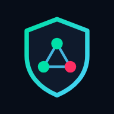

Ajude o NOC a chegar na Play Store
O jogo já roda no navegador. Para virar app na Play Store, o Google exige um teste fechado: pelo menos 12 pessoas com o app instalado por 14 dias seguidos. Se você tem um celular Android, pode ser uma delas.
O que você precisa
- Celular Android com a Play Store
- A conta Google (Gmail) que você usa nesse celular
- Manter o app instalado por 14 dias e abrir de vez em quando
Como entrar
- Entre no grupo de testadores com o mesmo Gmail da Play Store do seu celular.ENTRAR NO GRUPO
- Depois de entrar no grupo, abra o link do teste e toque em "Tornar-se testador".ABRIR O LINK DO TESTE
- Na mesma página, toque em "Fazer o download no Google Play" e instale o app.
- Não desinstale por 14 dias. Jogar algumas fases e mandar sua opinião ajuda muito.
Os links abrem em meados de novembro. Volte aqui ou acompanhe o LinkedIn do Marcos.
Achou um problema?
Use o botão "⚑ ERRO?" dentro do jogo ou escreva para marcos.anjosarth@gmail.com.
Enquanto isso, dá para jogar no navegador: umbralgml.github.io/noc-defesa. Privacidade: o que o jogo coleta.